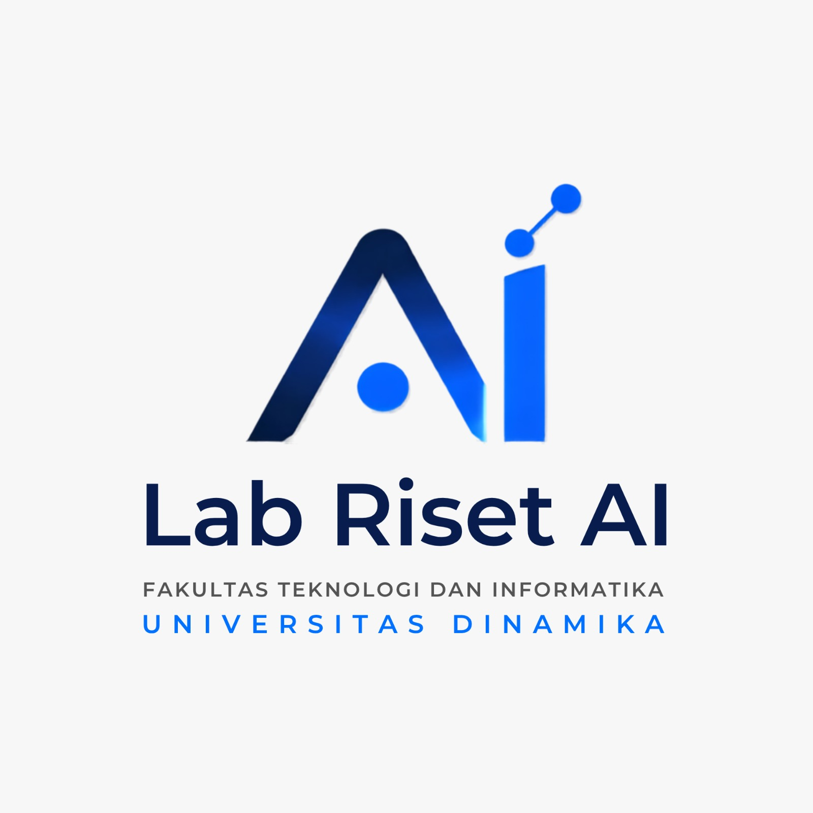

Pusat riset, pembelajaran, dan pengembangan teknologi berbasis kecerdasan buatan serta komputasi tingkat lanjut untuk solusi masa depan.
Jelajahi Riset KamiBidang fokus penelitian dan pengembangan berbasis data besar serta otomatisasi.
Pengembangan algoritma prediktif, pengenalan pola, dan pemodelan data kompleks.
Pengolahan citra (image processing), pengenalan objek, dan kamera pintar.
Pemrosesan bahasa alami, identifikasi suara, dan analitik teks interaktif.
Analisis prediktif, visualisasi data, dan manajemen informasi skala besar.
Integrasi kecerdasan buatan pada perangkat fisik, sistem otonom, dan IoT.
Dukungan perangkat keras dan lunak performa tinggi (HPC) untuk eksperimen cerdas.
Diperuntukkan mempercepat proses training model AI dan komputasi berskala besar.
Akses lingkungan pemrograman fleksibel berbasis cloud untuk eksperimen tanpa batas.
Dukungan lingkungan Python, R, TensorFlow, PyTorch, dan alat analitik terkini.
Peran strategis dalam akademik, industri, dan pengabdian masyarakat.
Wadah pembelajaran tingkat lanjut untuk mata kuliah AI, Sistem Digital, dan Data Mining.
Pusat pengembangan teknologi inovatif untuk menyelesaikan masalah industri dan UMKM.
Penyelenggara pelatihan kompetensi berbasis kebutuhan industri bagi akademisi dan umum.